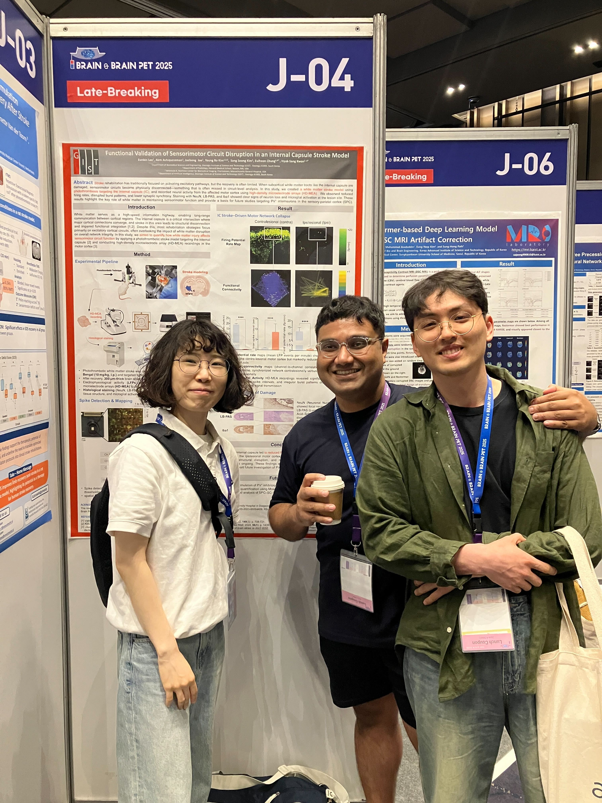

Akm Ashiquzzaman
Ph.D. Student, Department of Biomedical Science and Engineering
Gwangju Institute of Science and Technology (GIST)
Gwangju, South Korea
Research Interests
- Neuroscience & Behavior Sciences
- Deep Learning Neural Networks
- Intelligent Imaging Techniques
- Computational approaches for neurodegenerative diseases
Education
- Ph.D., Biomedical Science and Engineering, GIST (Sep. 2022 – present)
- M.Eng., Electronic & Computer Engineering, Chonnam National University (Sep. 2018 – Aug. 2020)
- B.Eng., Computer Science and Engineering, University of Asia Pacific (Apr. 2013 – Apr. 2017)
Research & Technical Skills
Wet Lab
- Primary Neuron Culture: Dissection and in vitro culture of adult cortical & spinal neurons
- Organotypic Slice Preparation: Handling, slicing, and culturing brain tissue(s) on MEA platforms
- Electrophysiology (HD-MEA): High-density recordings; analysis of LFPs, MFR, burst activity, and network synchrony
- Calcium & Voltage Imaging: Dye loading (Fluo-4 AM, FluoVolt); live-cell imaging and signal acquisition optimization
- Microscopy: Wide-field/light-field/confocal operation; sample mounting and fluorescence bead calibration
- Immunostaining & Histology: Cryosectioning, immunostaining, IHC; segmentation-based analysis (SAM, Cellpose)
- Tracer Injection & Perfusion: In vivo vascular/CSF tracing; drug perfusion for BBB/vascular studies
- Behavioral Analysis: OFT, nesting, social interaction, MoSeq, von Frey; automated pipelines (DeepLabCut, YOLOv8)
Computing
- Programming & Data Analysis: Python, R; neural signal processing, behavioral analysis, image analysis, ML (PCA, clustering, change point detection, SHAP)
- Neuroimaging & Signal Processing: MATLAB (incl. Simulink), SciPy, OpenCV; PyTorch/TensorFlow for DL workflows
- Microscopy & Imaging Analysis: Automated pipelines for stack processing, ΔF/F₀ computation, and 3D reconstruction (DeepCAD, Cellpose, SAM, U-Net)
- Statistics & Visualization: seaborn, matplotlib, scikit-learn, statsmodels; publication-ready figures
Publications
Selected journal publications (see Google Scholar for the full list).
Journal
-
Variational Autoencoder-Regulated Data Augmentation for Precise Estimation of Organic Pollutants in Water with Deeplearning Neural Network
Ashiquzzaman, A.; Kim, J.; Kim, C. Applied Artificial Intelligence, 2025. -
MoSeq-based 3D behavioral profiling uncovers neuropathic behavior changes in diabetic mouse model
Ashiquzzaman, A.; Lee, E.; et al. Scientific Reports, 2025. -
Vascular and glymphatic dysfunction as drivers of cognitive impairment in Alzheimer's disease: Insights from computational approaches
Fatima, G.; Ashiquzzaman, A.; et al. Neurobiology of Disease, 2025. -
Evaluating the preclinical efficacy of photobiomodulation in alleviating neuropathic corneal pain: A behavioral study
Khan, M. A.; Fatima, G.; Ashiquzzaman, A.; et al. Ophthalmology Science, 2025. -
Autoencoder based consensus mechanism for blockchain-enabled industrial Internet of Things
Arifeen, M.; Ghosh, T.; Islam, R.; Ashiquzzaman, A.; et al. Internet of Things, 2022. -
Study on human activity recognition using semi-supervised active transfer learning
Oh, S.; Ashiquzzaman, A.; Lee, D.; Kim, Y.; Kim, J. Sensors, 2021. -
Compact spatial pyramid pooling deep convolutional neural network based hand gestures decoder
Ashiquzzaman, A.; Lee, H.; Kim, K.; et al. Applied Sciences, 2020. -
Energy-efficient IoT sensor calibration with deep reinforcement learning
Ashiquzzaman, A.; Lee, H.; Um, T. W.; Kim, J. IEEE Access, 2020.
Conference Presentations
Akm Ashiquzzaman was the presenting author for all four 2026 posters.
-
Structured Integration Replaces Hyper-Synchrony During in-vitro Cortical Network Development
13th Asian Pacific Conference on Medical and Biological Engineering (APCMBE 2026), November 4–7, 2026, Daegu, South Korea. Poster P-T04-0624
Akm Ashiquzzaman, Hyo-Jeong Lee, Eunbin Lee, Sihyun Lee, Fatemeh Dehghan Nezhad, Young Ro Kim, Hyuk-Sang Kwon, Sang Seong Kim*, Euiheon Chung*Abstract
Mean firing rate (MFR) is the standard readout of in-vitro neuronal maturation, yet it misses network organisation: between developmental phases 1 and 3, MFR rose 1.7-fold while the spike-time tiling coefficient (STTC), a rate-robust coordination measure, rose ~70-fold (0.005 → 0.34). We recorded seven primary mouse cortical cultures daily on a 4,096-electrode high-density microelectrode array (HD-MEA; 137 recordings, days in vitro, DIV 1–41) and imaged separate cultures with the calcium (Ca²⁺) indicator GCaMP6s at DIV 10, 15 and 20. HD-MEA development split into four discrete phases with borders at DIV 3.5, 7.5 and 16.5 (steps beat smooth trends; Bayesian information criterion difference, ΔBIC ≥ 121): sparse firing (P1), slow bursts in segregated modules (P2), module merging (P3) and fast synchronous bursts (P4; inter-spike interval, ISI, within bursts 16 → 4.8 ms). All seven cultures followed this order (p = 0.005). In Ca²⁺ imaging, near-global co-activation at DIV 10 (pairwise r 0.92, graph density 1.00) became selective by DIV 15 (r 0.51, density 0.54) as synchronous events peaked (19.2 min⁻¹). Both modalities place the main transition at DIV 15–17, where indiscriminate co-activation gives way to structured, millisecond-precise integration. A generative digital twin (variational autoencoder) is being trained to predict unseen days.
-
Diabetic Neuropathic Pain Remodels Astrocyte–Neuron Signaling and Fragments Mesoscale Spinal Cord Electrophysiological Network Activity
K-Brain 2026, 29th Annual Meeting of the Korean Society for Brain and Neural Sciences (KSBNS), September 6–8, 2026, Daejeon Convention Center, Daejeon, South Korea
Akm Ashiquzzaman, Eunbin Lee, Hyuk-Sang Kwon, Young Ro Kim, Sang Seong Kim*, Euiheon Chung*Abstract
DNP spinal cords exhibited reduced spontaneous LFP responses but enhanced local CSD activity, indicating a shift from coordinated mesoscale activity toward fragmented local source–sink dynamics. Immunofluorescence further showed increased CaMKII-associated signaling, reduced neuronal KCC2 expression, and elevated GFAP/IBA1 immunoreactivity. Together, these findings suggest that diabetic neuropathy remodels neuron–glia signaling and disrupts coordinated spinal network activity.
-
Mesoscale Electrophysiology Reveals Heterotypic Functionality Divergence in Alzheimer's Disease
20th International Symposium on Aging (ISA), June 12, 2026, Gochang Wellpark Hotel, Gochang, South Korea
Akm Ashiquzzaman, Eunbin Lee, Gehan Fatima, Hyuk-Sang Kwon, Sang Seong Kim*, Euiheon Chung*Abstract
Alzheimer's disease disrupts brain-wide neuronal communication, but genotype-specific effects on mesoscale circuit dynamics remain unclear. Using high-density microelectrode arrays, we examined baseline activity in C57BL/6, 5xFAD, and APPNL-G-F brain slices across cortical and hippocampal regions. Event-aligned current source density mapping revealed distinct changes in activity emergence, propagation, and synchrony. 5xFAD slices showed reduced current flow and cumulative activity, suggesting impaired circuit recruitment, while APPNL-G-F slices preserved broader activity with altered synchrony. Multi-feature electrophysiological embedding separated the three genotypes into distinct network states, indicating genotype-specific remodeling and highlighting HD-MEA profiling as a functional readout of AD network vulnerability.
-
Alzheimer's Model Mice Show Behavioral Impairment Linked to Brain Network Remodeling and Neuroinflammation
Annual Meeting of the Korean Society of Cerebral Blood Flow and Metabolism (KSCBFM), May 29–30, 2026, Ewha Womans University, Seoul, South Korea
Akm Ashiquzzaman, Gehan Fatima, Eunbin Lee, Sang Seong Kim, Euiheon Chung*Abstract
Alzheimer's disease involves progressive cognitive decline and is increasingly associated with motor dysfunction and altered network coordination. To investigate multiscale disease mechanisms, we profiled 15-month-old APPNL and APPNL-G-F mice using deep learning-based behavior, high-density MEA electrophysiology, and immunofluorescence imaging. APPNL-G-F mice show a multiscale disease phenotype linking behavioral impairment, hippocampal network dysfunction, and cellular remodeling. Deep-learning behavior analysis shows abnormal locomotor/exploratory states. HD-MEA reveals disrupted cortico-hippocampal LFP/CSD organization, altered spectral recruitment, and abnormal dynamics. IF imaging shows increased GFAP/Iba1 neuroinflammation, reduced MAP2 dendritic structure, and altered PV/VGAT inhibitory markers. Together, these results suggest that APPNL-G-F pathology destabilizes hippocampal circuits through glial activation, E/I remodeling, and dendritic loss.
* Corresponding author
Patents
-
Fire Risk Prediction System and its Method Using Unmanned Aerials
Registered patent application (KR), 2019. -
Image Quality Evaluation System and Method for Network Services
Registered patent application (KR), 2019. -
System and Method for Analyzing Fire Record Information to Determine Risk of Fire Situations
Registered patent application (KR), 2019.
Awards & Certifications
- GIST Best Scholar Award (2025)
- Research Grant (Post Masters Researcher), ITRC, CNU (2020)
- Chonnam National University Global Scholarship (2018)
- Best Paper Award, 5th IEEE R10HTC (2017)
- ITEE IP Passer (Merit position 10th), Japanese IT Worker Standardized Test (2016)
- VC's Honor List Merit Scholar (2017)
Experience
- Junior Bigdata Researcher, Xisom Inc., Daejeon, Rep. of Korea (Feb. 2021 – Aug. 2022)
- Research Scientist, Information Technology Research Center (ITRC), Chonnam National University, Gwangju (Sep. 2020 – Jan. 2021)
- Graduate Research Assistant, Smart Mobile Media Computing Lab, Chonnam National University (Sep. 2018 – Aug. 2020)
- Assistant Teacher/Reader, University of Asia Pacific (Apr. 2016 – Apr. 2017)
Personal Gallery
